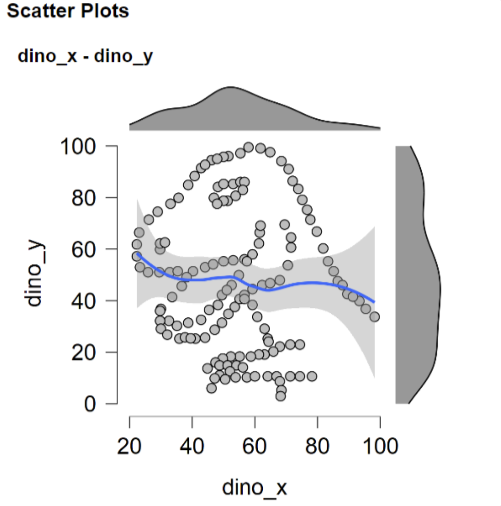
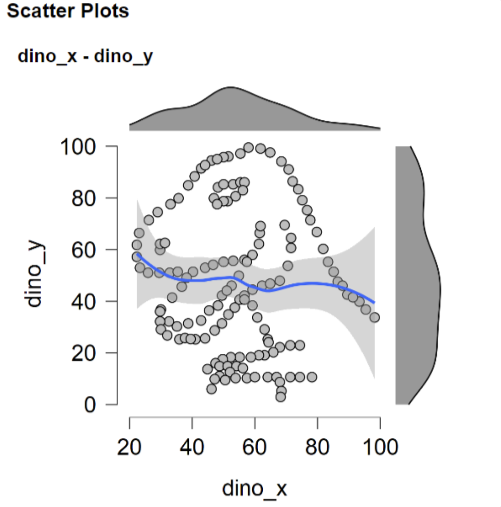
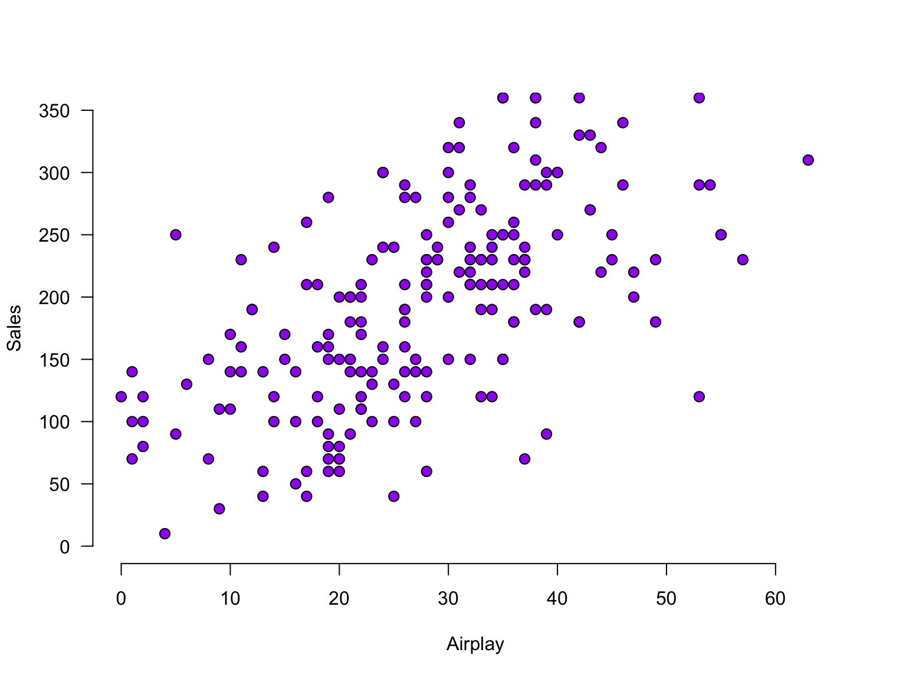
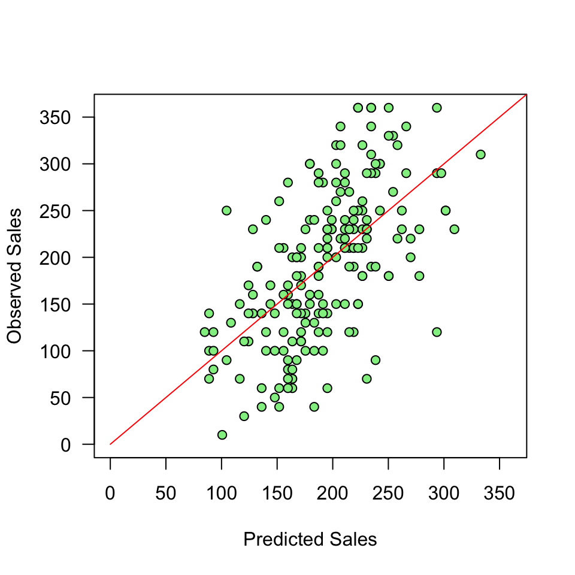
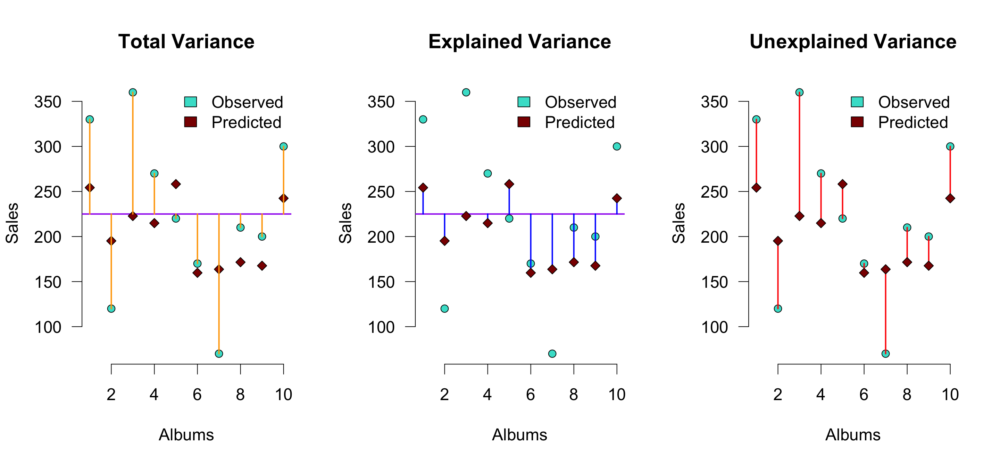

20. Correlation and Simple regression
Some Opening Mantra’s
Always plot your data
 ## Always plot your data 
## Always plot your data 
Predicting the DV
- The dependent variable (DV) varies
- We try to recreate/predict the observed DV values by looking at predictor variables
- Accurate approximation/prediction of the DV? -> high explained variance
- Total variability of DV = explained variance + unexplained variance
- \(\text{DV} = \text{model prediction} + \text{error}\)
- More explained variance than unexplained variance (e.g., \(F >> 1\)) -> success!
Keep your models simple/interpretable

Correlation
Pearson Correlation

In statistics, the Pearson correlation coefficient, also referred to as the Pearson’s r, Pearson product-moment correlation coefficient (PPMCC) or bivariate correlation, is a measure of the linear correlation between two variables X and Y. It has a value between +1 and −1, where 1 is total positive linear correlation, 0 is no linear correlation, and −1 is total negative linear correlation. It is widely used in the sciences. It was developed by Karl Pearson from a related idea introduced by Francis Galton in the 1880s.
Source: Wikipedia
PMCC
\[r_{xy} = \frac{{COV}_{xy}}{S_xS_y}\] Where \(S\) is the standard deviation and \(COV\) is the covariance.
\[{COV}_{xy} = \frac{\sum_{i=1}^N (x_i - \bar{x})(y_i - \bar{y})}{N-1}\]
Plot correlation
Plot correlation

Plot correlation

\[(x_i - \bar{x})(y_i - \bar{y})\]
Guess the correlation
Load data
n <- 50
data <- read.csv("Album Sales.csv")[, -4]
data <- data[1:n, ] # take the first 50 rows of the album sales data set from Field
DT::datatable(data, rownames = FALSE, options = list(searching = FALSE, scrollY = 415, paging = F, info = F))Explaining variance

Standardize
\[z = \frac{x_i - \bar{x}}{{sd}_x}\]
z.sales <- (data$sales - mean(data$sales)) / sd(data$sales)
z.airplay <- (data$airplay - mean(data$airplay)) / sd(data$airplay)Standardize
Standardize

Covariance
\[{COV}_{xy} = \frac{\sum_{i=1}^N (x_i - \bar{x})(y_i - \bar{y})}{N-1}\]
mean.sales <- mean(sales, na.rm=TRUE)
mean.airplay <- mean(airplay, na.rm=TRUE)
delta.sales <- sales - mean.sales
delta.airplay <- airplay - mean.airplay
prod <- (sales - mean.sales) * (airplay - mean.airplay)
covariance <- sum(prod) / (N - 1)
covariance[1] 474.1388Covariance
Correlation
\[r_{xy} = \frac{{COV}_{xy}}{S_xS_y}\]
correlation <- covariance / ( sd(sales) * sd(airplay) ); correlation[1] 0.5580504correlation[1] 0.5580504Correlation
\[r_{xy} = \frac{{COV}_{xy}}{S_xS_y}\] \[{COV}_{xy} = \frac{\sum_{i=1}^N (x_i - \bar{x})(y_i - \bar{y})}{N-1}\]
cor( sales, airplay) # correlation[1] 0.5580504cor(z.sales, z.airplay) # correlation of z-scores[1] 0.5580504# covariance of z-scores
sum(z.sales * z.airplay ) / (N - 1)[1] 0.5580504Plot correlation

Significance of a correlation
\[t_r = \frac{r \sqrt{N-2}}{\sqrt{1 - r^2}} \\ {df} = N - 2\]
\[ \begin{aligned} H_0 &: t_r = 0 \\ H_A &: t_r \neq 0 \\ H_A &: t_r > 0 \\ H_A &: t_r < 0 \\ \end{aligned} \]
r to t
df <- N-2
t.r <- ( correlation*sqrt(df) ) / sqrt(1-correlation^2)
cbind(t.r, df) t.r df
[1,] 4.65926 48Visualize
One-sample t-test
if(!"visualize" %in% installed.packages()) { install.packages("visualize") }
library("visualize")
visualize.t(c(-t.r, t.r),df,section='tails')Partial correlation
Venn diagram

Partial correlation
\[\LARGE{r_{xy \cdot z} = \frac{r_{xy} - r_{xz} r_{yz}}{\sqrt{(1 - r_{xz}^2)(1 - r_{yz}^2)}}}\]
adverts <- data$adverts
cor.sales.airplay <- cor(sales,airplay)
cor.sales.adverts <- cor(sales,adverts)
cor.airplay.adverts <- cor(airplay,adverts)
data.frame(cor.sales.airplay, cor.sales.adverts, cor.airplay.adverts) cor.sales.airplay cor.sales.adverts cor.airplay.adverts
1 0.5580504 0.504637 -0.05460507numerator <- cor.sales.airplay - (cor.sales.adverts * cor.airplay.adverts)
denominator <- sqrt( (1-cor.sales.adverts^2)*(1-cor.airplay.adverts^2) )
partial.correlation <- numerator / denominator
partial.correlation[1] 0.6793231Significance of partial correlation
One-sample t-test
df <- N - 3
t.pr <- ( partial.correlation*sqrt(df) ) / sqrt(1-partial.correlation^2)
t.pr[1] 6.346355visualize.t(c(-t.pr,t.pr),df,section='tails')
Regression
(one predictor)
Regression
\[\LARGE{\text{outcome} = \text{model prediction} + \text{error}}\]
In statistics, linear regression is a linear approach for modeling the relationship between a scalar dependent variable y and one or more explanatory variables denoted X. The case of one explanatory variable is called simple linear regression.
\[\LARGE{Y_i = \beta_0 + \beta_1 X_i + \epsilon_i}\]
In linear regression, the relationships are modeled using linear predictor functions whose unknown model parameters are estimated from the data.
Source: wikipedia
Assumptions
A selection from Field:
- Sensitivity
- Homoscedasticity
Sensitivity
Outliers
- Extreme residuals
- Cook’s distance (< 1)
- Check Q-Q and residuals plots
Sensitivity

Homoscedasticity
- Variance of residual should be equal across all expected values
- Look at scatterplot of standardized: predicted values \(\times\) residuals. Roughly round shape is needed
- After the analysis is complete because it’s based on the residuals
The data
The data

Calculate regression parameters
\[{sales}_i = b_0 + b_1 {airplay}_i + \epsilon_i\]
airplay <- data$airplay
sales <- data$salesCalculate \(b_1\)
\[b_1 = r_{xy} \frac{s_y}{s_x}\]
# Calculate b1
cor.sales.airplay <- cor(sales,airplay)
sd.sales <- sd(sales)
sd.airplay <- sd(airplay)
b1 <- cor.sales.airplay * ( sd.sales / sd.airplay )
b1[1] 3.939182Calculate \(b_0\)
\[b_0 = \bar{y} - b_1 \bar{x}\]
mean.sales <- mean(sales)
mean.airplay <- mean(airplay)
b0 <- mean.sales - b1 * mean.airplay
b0[1] 84.87251The slope

The slope

The slope - zoomed in

Define regression equationxf
\[\widehat{sales} = {\text{model prediction}} = b_0 + b_1 {airplay}\]
So now we can add the expected sales based on this model
prediction <- b0 + b1 * airplay
data$prediction <- round(prediction, 2)Predicted values
Let’s have a look
\(y\) vs \(\hat{y}\)
And lets have a look at this relation between model prediction and observed

Error
The error / residual is the difference between the model predictions and observed values
error <- sales - prediction
data$error <- round(error, 2)Model fit
- The fit of the model can be viewed in terms of the correlation (\(r\)) between the predictions and the observed values: if the predictions are perfect, the correlation will be 1.
- For simple regression, this is equal to the correlation between airplay and sales. For multiple regression (next lecture), these will differ.
r <- cor(prediction, sales)
r[1] 0.5989188Explained variance
Squaring this correlation gives the proportion of explained variance:
r^2[1] 0.3587037Explained variance visually (\(n = 10\))

\(r^2\) is the proportion of blue to orange, while \(1 - r^2\) is the proportion of red to orange
Test model fit
Compare model to mean Y (sales) as model
\[F = \frac{(n-p-1) r^2}{p (1-r^2)}\]
Where \({df}_{model} = n - p - 1 = N - K - 1\).
p <- 1
fStat <- ( (n-p-1)*r^2 ) / ( p*(1-r^2) )
fStat[1] 110.7496Signal to noise
Given the description of explained variance, F can again be seen as a proportion of explained to unexplained variance. Also known as a signal to noise ratio.
df.model <- p # n = rows, p = predictors
df.error <- n - p - 1
SS_model <- sum((prediction - mean(sales))^2)
SS_error <- sum((sales - prediction)^2)
MS_model <- SS_model / df.model
MS_error <- SS_error / df.error
fStat <- MS_model / MS_error
fStat[1] 110.7496Calculate t-values for b’s for hypothesis testing
We can also convert each \(b\) to a \(t\)-statistic, since that has a known sampling distribution:
\[\begin{aligned} t_{n-p-1} &= \frac{b - \mu_b}{{SE}_b} \\ df &= n - p - 1 \\ \end{aligned}\]
Where \(b\) is the beta coefficient, \({SE}\) is the standard error of the beta coefficient, \(n\) is the number of subjects and \(p\) the number of predictors. \(\mu_b\) is the null-hypothesized value for \(b\) - usually set to 0.
# Get Standard error's for b (bonus)
se.b1 <- sqrt(MS_error / (var(airplay) * (n-1))); se.b1[1] 0.3743129# Calculate t for b1
mu.b1 <- 0
t.b1 <- (b1 - mu.b1) / se.b1; t.b1[1] 10.52377n <- nrow(data) # number of rows
p <- 1 # number of predictors
df.b1 <- n - p - 1P-values of \(b_1\)
library("visualize")
# p-value for b1
visualize.t(c(-t.b1,t.b1),df.b1,section='tails')Visualize
Instead of obtaining the p-value by locating the t in the t-distribution, we can locate the F in the F-distribution
visualize.f(fStat, df.model, df.error, section='upper')It’s all the same thing…
fStat[1] 110.7496t.b1^2[1] 110.7496So how many @!&#$ ways do we have for assessing an association?!
# the correlation between x and y, standardized (between -1, 1)
cor(sales, airplay) [1] 0.5989188# the covariance between x and y, unstandardized
cov(sales, airplay)[1] 593.0151# regression coefficient in linear regression, standardized (not bounded)
# generalizes easily to settings with multiple predictors
b1 [1] 3.939182# t-statistic: standardized difference between b1 and 0
t.b1[1] 10.52377# The metrics below are more indicative of an overall model's performance
# the correlation between y and model prediction, standardized (between -1, 1)
cor(sales, prediction) # can be squared to get proportion explained variance[1] 0.5989188# F: signal/noise ratio of a model
fStat [1] 110.7496End
Contact